이 자료는 Unit 1 Lesson 1 我的新学校(나의 새 학교) 단원에 딸린 Quizlet 링크 모음이다. 링크는 두 개인데, 하나는 Text 1 카드이고 다른 하나가 지금 보는 Text 2 카드다. 교과서 본문(text)을 두 덩어리로 나눠서, 각 본문에 나오는 단어를 따로 외우게 만들어 둔 것이다.
이 자료는 Unit 1 Lesson 1 我的新学校(나의 새 학교) 단원에서 쓰는 퀴즐렛(Quizlet) 링크 모음이다. 링크가 두 개 걸려 있는데, 하나는 Text 1 플래시카드이고 다른 하나는 Text 2 플래시카드다. 즉 본문 하나당 카드 묶음 하나씩, 두 세트를 따로 외우게 만들어 둔 것이다.
플래시카드(flashcards)는 앞면에 중국어 글자, 뒷면에 뜻이 나오는 낱말 카드다. 링크를 눌러 들어가면 이 단원 본문에 나오는 단어들을 카드로 넘기면서 외울 수 있다. 教材가 종이가 아니라 웹사이트에 있으므로, 링크를 눌러야 실제 공부할 내용이 나온다.
제목에 붙은 Y9는 9학년용이라는 뜻이고, 이 자료는 9월 2일에 올라왔다. 단원 이름 我的新学校는 '나의 새 학교'라는 뜻이라, 학교 안의 장소·과목·사람처럼 학교와 관련된 말이 중심이 될 자리다.
앞부분은 학교 시설 낱말(school facilities)이다. 学校(학교), 教室(교실), 图书馆(도서관), 操场(운동장), 体育馆(체육관), 食堂(식당), 办公室(사무실), 电脑室(컴퓨터실), 实验室(실험실), 游泳池(수영장) 열 개가 그림과 짝지어 나온다. 이 낱말들은 끝 글자에 규칙이 있다. 室은 방(教室·电脑室), 馆은 큰 건물·홀(图书馆·体育馆), 场은 넓은 마당(操场·篮球场), 楼는 여러 층짜리 건물(教学楼·中学楼)이라서, 모르는 낱말이 나와도 끝 글자만 보면 어떤 종류인지 짐작할 수 있다.
가운데는 위치를 말하는 세 동사 在／是／有다. 셋 다 위치를 말하지만 말을 어디서 시작하느냐에 따라 어순이 달라진다. 찾는 물건·장소로 문장을 시작하면 在를 쓴다(사물＋在＋위치): 游泳池在体育馆里面. 위치로 시작해서 '거기가 무엇이다'라고 말하면 是를 쓴다(위치＋是＋사물): 幼儿园的对面是一个公园. 위치로 시작해서 '거기에 무엇이 있다'라고 말하면 有를 쓴다(위치＋有＋사물): 篮球场的旁边有两个网球场. 함께 쓰는 위치 낱말은 里面(안), 外面(밖), 旁边(옆), 对面(맞은편), 附近(근처)다.
뒷부분은 一……就…… 구문이다. 뜻은 '~하자마자 바로 ~한다'이고, 형태는 주어＋一＋동작1＋就＋동작2다. 我一下课就打网球了(수업 끝나자마자 테니스를 쳤다), 她一放学就坐校车回家(하교하자마자 스쿨버스로 집에 간다)처럼 앞 일이 끝나면 곧바로 뒤 일이 일어난다는 뜻이다. 老师一进教室，我们就安静下来처럼 주어가 둘일 때는 一 앞과 就 앞에 각각 주어를 넣는다.
수업에서 하는 활동은 학교 지도를 보고 建物 위치를 직접 말하는 것이다. 한 단계 위(Exceeding)는 건물 네 개를 골라 在·是·有 세 동사를 모두 써서 완전한 문장을 쓰는 것이고, 그 위(Mastering)는 한 장소를 골라 서로 다른 문형 두세 개로 설명하는 것이다. 더 길게 답하고 싶으면 而且(게다가)나 除了……以外(~을 제외하고)를 붙여 두 마디 문장으로 만든다. 이유를 설명할 때는 因为……所以……(~때문에 그래서 ~)를 쓴다.
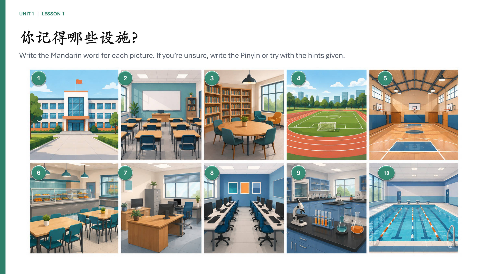
학교 시설(设施) 이름을 그림 보고 떠올려 쓰는 연습 쪽이다.
답이 생각나지 않으면 한자 대신 병음으로 써도 되고, 힌트를 참고해도 된다.
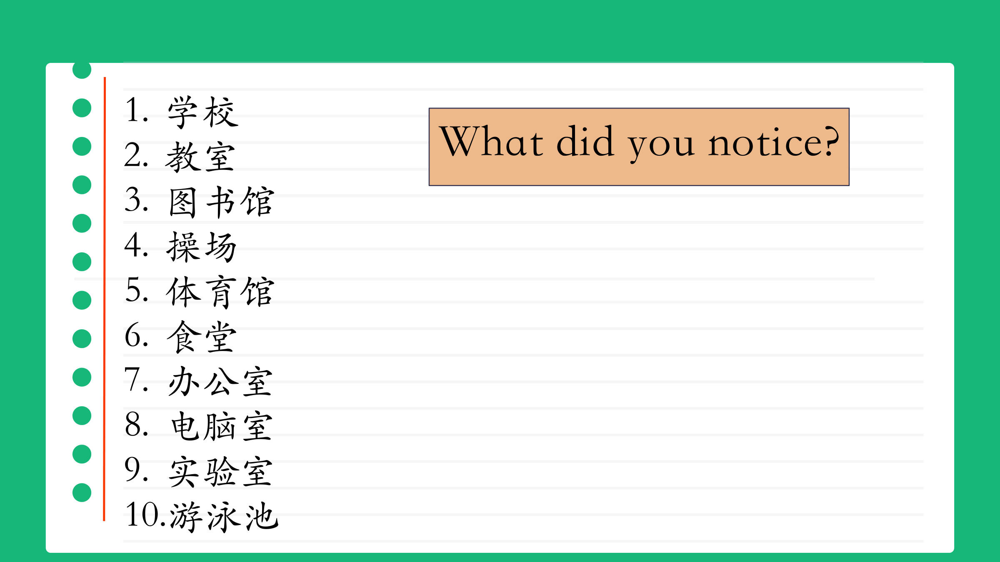
학교 안 장소를 가리키는 낱말 열 개가 나열된 쪽이다.
열 개를 훑어보고 낱말들 사이의 공통점을 스스로 찾아내라는 물음이 끝에 붙어 있다.
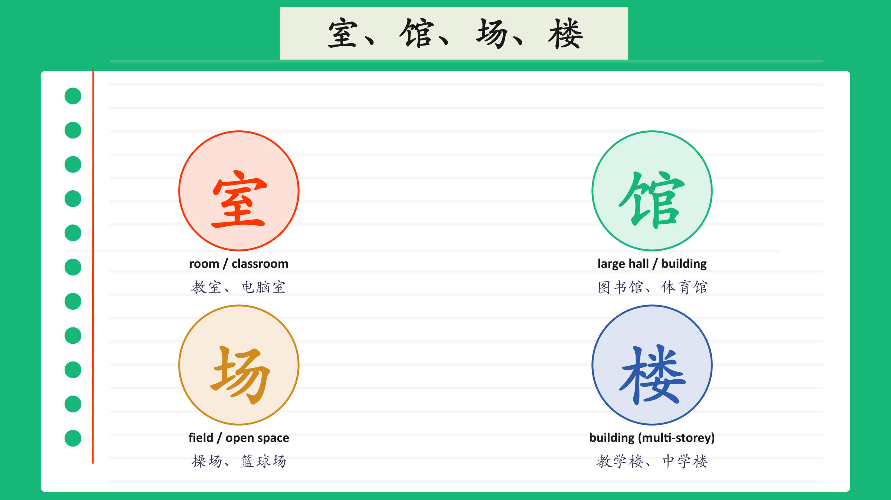
室·馆·场·楼는 모두 낱말 뒤에 붙어 장소를 만드는 글자다. 앞말이 무엇을 하는 곳인지 알려 준다.
네 글자는 공간의 종류가 다르다. 室은 방 한 칸, 馆은 큰 홀이 있는 건물, 场은 지붕 없이 트인 넓은 곳, 楼는 여러 층으로 된 건물이다.
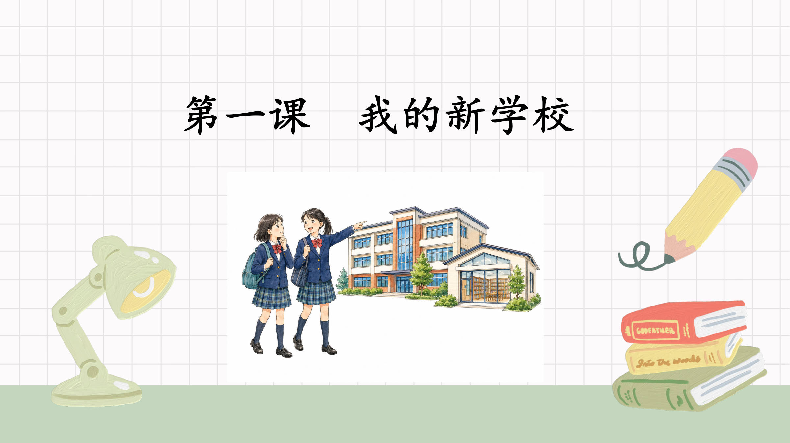
이 쪽은 단원 제목만 있는 표지 쪽이다. 第一课는 '제1과', 我的新学校는 '나의 새 학교'라는 뜻이다.
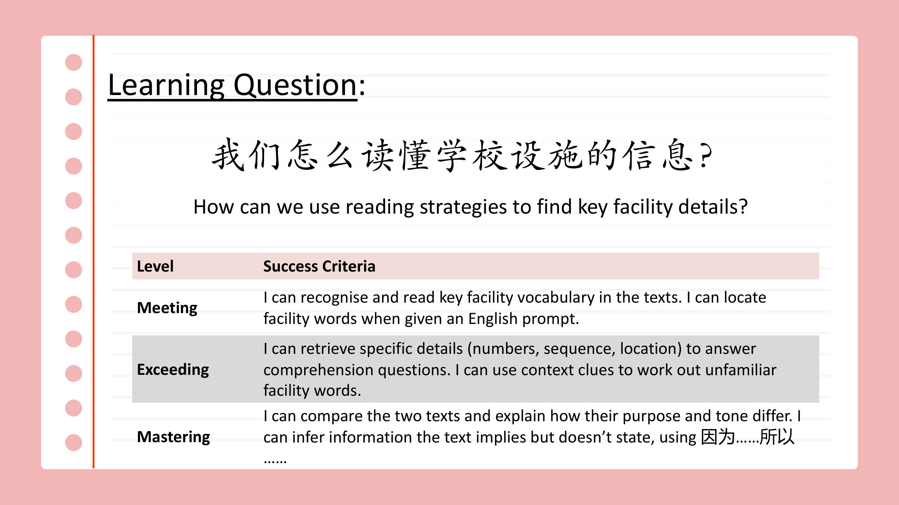
이 쪽은 배울 내용이 아니라 '무엇을 할 수 있어야 하는가'를 정한 목표 쪽이다. 학습 질문 하나와 세 단계 성취 기준으로 되어 있다.
단계가 올라갈수록 요구가 달라진다. 도달은 낱말 알아보기, 우수는 숫자·순서·위치 찾기와 문맥으로 뜻 짐작하기, 최상은 두 글의 목적·어조 비교와 因为……所以……로 추론하기다.
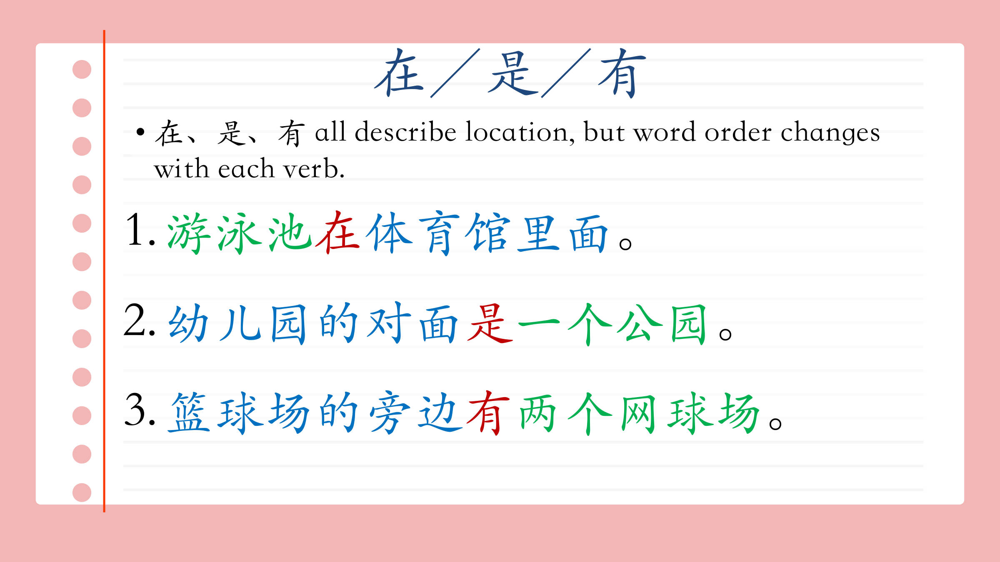
在·是·有 셋 다 위치를 말하지만, 쓰는 동사에 따라 말의 순서가 바뀐다.
在은 '장소+방위사(里面)' 앞에 오고, 是·有는 '장소+방위사(对面·旁边)' 뒤에 온다.
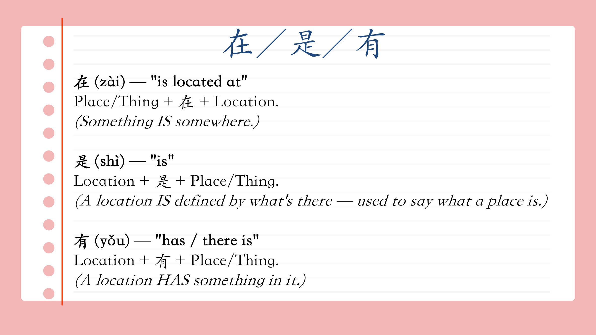
在은 '사물+在+장소' 순서로 무언가가 어디에 있는지 말하고, 是와 有는 반대로 '장소'가 앞에 온다.
같은 장소 문장이라도 是는 그 장소가 무엇인지 규정하고, 有는 그 장소 안에 무엇이 있는지를 말한다.
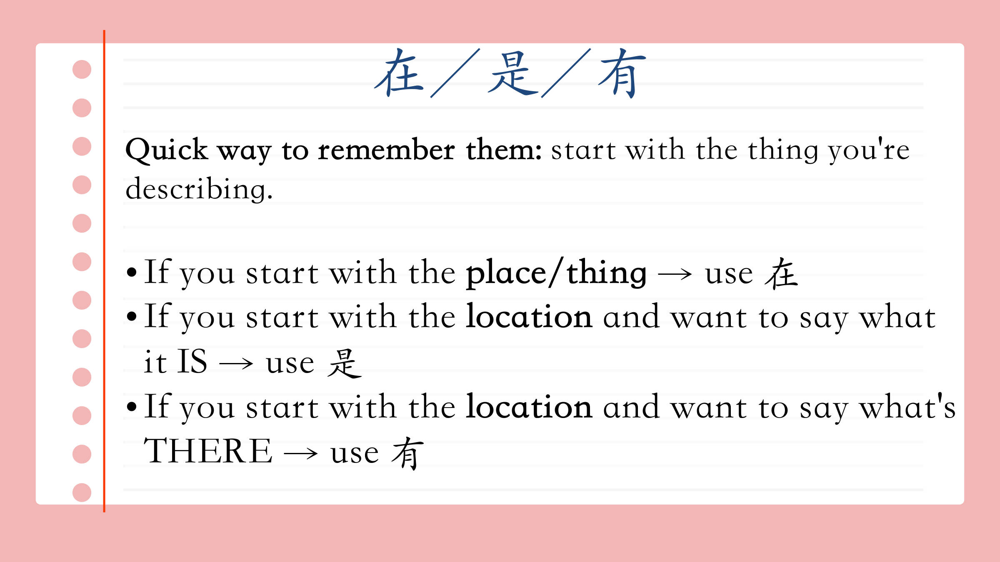
문장을 무엇으로 시작하느냐에 따라 在·是·有가 갈린다.
장소로 시작할 때, '그것이 무엇이다'는 是, '거기에 무엇이 있다'는 有다.
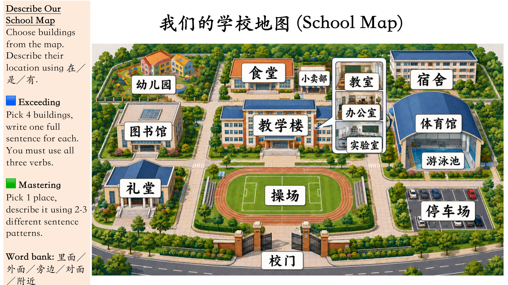
과제 등급이 두 단계다. 기본(Mastering)은 장소 1개를 문형 2~3개로, 심화(Exceeding)는 건물 4개를 완전한 문장으로 쓰고 在·是·有 세 동사를 모두 넣어야 한다.
위치를 나타내는 낱말 창고가 주어져 있다 — 里面(안), 外面(밖), 旁边(옆), 对面(맞은편), 附近(근처).
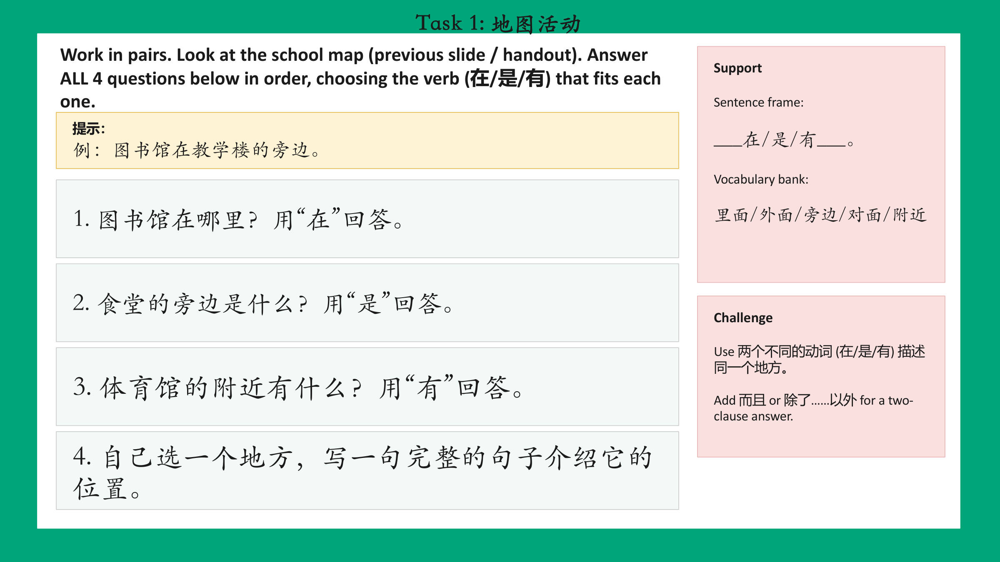
질문마다 쓰는 동사가 정해져 있다 — 1번은 在, 2번은 是, 3번은 有이고, 4번만 스스로 골라 쓴다.
도움(Support)은 문장 틀과 위치 낱말 다섯 개(里面·外面·旁边·对面·附近)를 주고, 도전(Challenge)은 같은 장소를 동사 두 개로 설명하거나 而且·除了……以外로 문장을 잇는 것이다.
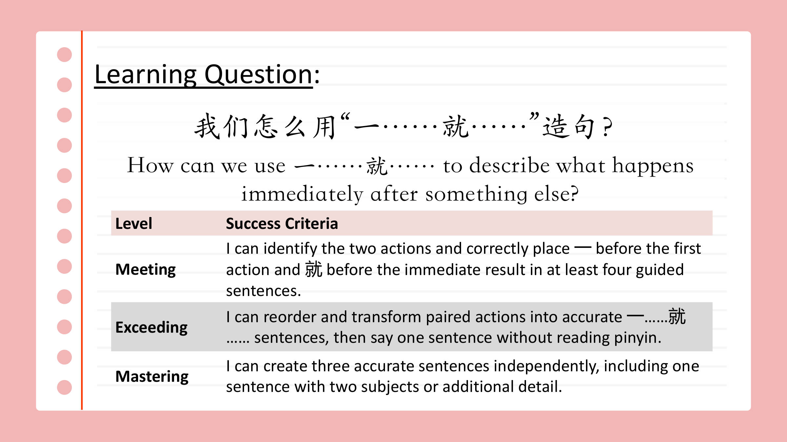
一은 먼저 일어나는 동작 앞에, 就는 바로 뒤따르는 결과 앞에 놓는다.
단계는 도달(안내받아 4문장) → 우수(순서 바꾸기 + 병음 없이 1문장 말하기) → 최상(혼자 3문장, 그중 하나는 주어 2개나 추가 설명)으로 올라간다.
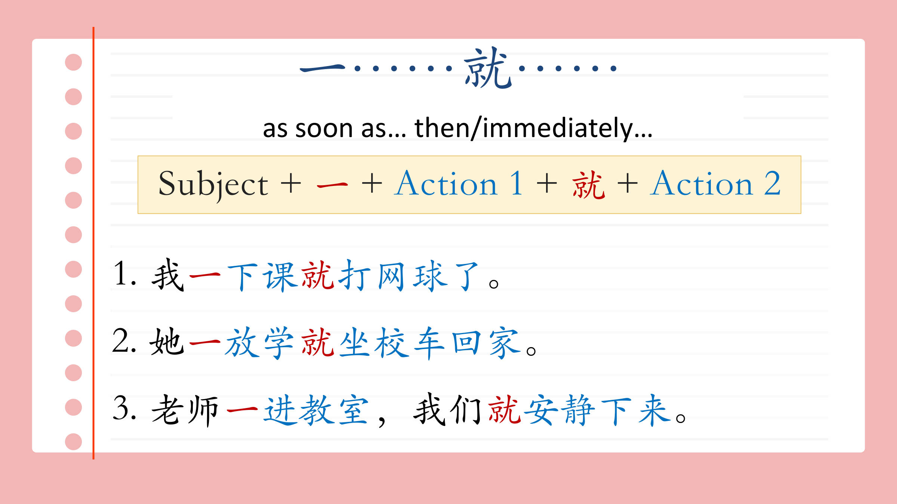
'⼀'와 '就'는 짝으로 쓰며, ⼀ 뒤에 먼저 일어난 동작을, 就 뒤에 바로 이어지는 동작을 넣는다.
세 번째 예문처럼 주어가 둘이면 ⼀는 앞 주어(老师) 뒤에, 就는 뒤 주어(我们) 뒤에 놓는다.
All three verbs describe location, but the word order changes depending on where you begin the sentence. Use 在 when you start with the thing/place you are looking for: thing + 在 + location, e.g. 游泳池在体育馆里面. Use 是 when you start with the location and say what that place is: location + 是 + thing, e.g. 幼儿园的对面是一个公园. Use 有 when you start with the location and say what exists there: location + 有 + thing, e.g. 篮球场的旁边有两个网球场.
一……就…… means 'as soon as … then …', showing that the second action happens immediately after the first. The structure is subject + 一 + action 1 + 就 + action 2. For example, 我一下课就打网球了 means 'As soon as class finished, I played tennis.' Another accepted example is 她一放学就坐校车回家 ('As soon as school finishes, she takes the school bus home').
In 老师一进教室，我们就安静下来 there are two different subjects, so a subject is placed before 一 (老师) and another subject before 就 (我们). In 我一下课就打网球了 there is only one subject (我), so it appears once at the start of the sentence. The rule is: when the two actions belong to different people, put a subject in front of both 一 and 就.
The last character shows what kind of place it is, so you can guess an unknown word. 室 means a room, e.g. 教室 or 电脑室. 馆 means a large building or hall, e.g. 图书馆 or 体育馆. 场 means a wide open ground, e.g. 操场 or 篮球场. 楼 means a building with several floors, e.g. 教学楼 or 中学楼.
Any five of the ten facility words are accepted with correct meanings: 学校 (school), 教室 (classroom), 图书馆 (library), 操场 (sports field/playground), 体育馆 (gym/sports hall), 食堂 (canteen), 办公室 (office), 电脑室 (computer room), 实验室 (laboratory), 游泳池 (swimming pool). One mark is lost for each wrong or missing meaning. The Chinese characters must match the word given.
The five position words are 里面 (inside), 外面 (outside), 旁边 (beside/next to), 对面 (opposite) and 附近 (nearby). Two correct sentences must follow one of the location patterns, for example 图书馆在教学楼里面 (thing + 在 + place) and 食堂的旁边有一个电脑室 (place + 有 + thing). Marks are given for correct meanings and for correct word order in the two sentences.
The answer must contain three complete sentences, each with a different verb and the correct word order. Example: 实验室在教学楼里面 (The lab is inside the teaching building) uses thing + 在 + place; 操场的对面是体育馆 (Opposite the sports field is the gym) uses place + 是 + thing; 食堂的旁边有一个游泳池 (Next to the canteen there is a swimming pool) uses place + 有 + thing. Marks are given for using all three verbs correctly and for accurate translations.
To extend an answer you join two clauses with a connective instead of writing one short sentence. The unit teaches 而且 (moreover/what's more) and 除了……以外 (apart from/except for) for adding extra information, and 因为……所以…… (because … so …) for giving a reason. For example, 我们的学校有一个图书馆，而且图书馆的旁边有一个电脑室. A reason sentence would be 因为我喜欢游泳，所以我一下课就去游泳池.
This is the Mastering-level task: one place must be described with two or three different structures. For example, about the library: 图书馆在教学楼里面 (thing + 在 + place), 教学楼里面有一个图书馆 (place + 有 + thing), and 图书馆的对面是操场 (place + 是 + thing). Marks are given for keeping the same place as the topic, for using genuinely different patterns, and for correct word order in each sentence.
The word order is wrong: the sentence mixes the patterns and puts the position word 里面 at the front, and 是 is used to link a thing to a place instead of a place to a thing. Starting with the thing, it should be 游泳池在体育馆里面 (thing + 在 + location). Starting with the location, it should be 体育馆里面有一个游泳池 (location + 有 + thing).